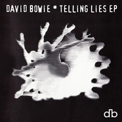
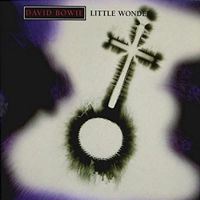
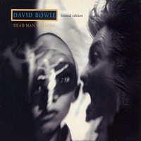
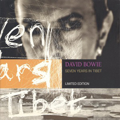

Designed by Bowie, in collaboration with the late fashion designer Alexander McQueen, Bowie's Union Jack frock coat (inspired by Gavin Turk's 1995 artwork Indoor Flag) chimed perfectly with a UK in thrall to Britpop. However, the drum'n'bass-fuelled Earthling couldn't have been any further from the guitar-based rock the likes of Blur and Suede had created while inspired by Bowie's classic '70s albums. Nor was Bowie even in the UK when the photo was taken. "I was in New York when I shot that." Bowie later revealed. "Frank Ockenfels took the photograph, and then Dave De Angelis, who's a really good computer designer in England, squeezed a bit of England in front me."
Photographer: Frank Ockenfels III | Designer: Dave De Angelis
LITTLE WONDER Stinky weather, fat shaky hands Dopey morning Doc, grumpy gnomes Little wonder then, little wonder You little wonder, little wonder you Big screen dolls, tits and explosions Sleepy time, bashful but nude Little wonder then, little wonder You little wonder, little wonder you I'm getting that Intergalactic, seeming to be you It's all in the tablets, sneezy Bhutan Little wonder then, little wonder You little wonder, little wonder you Mars happy nation, sit on my karma Dame meditation, take me away Little wonder then, little wonder You little wonder, little wonder you Sending me so far away, so far away So far away, so far away So far away, so far away So far away, so far away So far away, so far away So far away, so far away So far away, so so far away So far away, so far away So far away, so so far away You little wonder, little wonder you You little wonder, little wonder you Sending me so far away, so far away So far away, so far away So far away, so far away So far away, so far away So far away, so far away So far away, so far away So far away, so so far away So far away, so far away So far away, so so far away Little wonder, little wonder you You little wonder, you little wonder you You little wonder you Little wonder then, little wonder You little wonder, little wonder you LOOKING FOR SATELLITES Nowhere, Shampoo, TV, Combat, Boy's Own Slim tie, Showdown, Can't stop Nowhere, Shampoo, TV, Combat, Boy's Own Slim tie, Showdown, Can't stop Where do we go from here? There's something in the sky Shining in the light Spinning and far away Nowhere, Shampoo, TV, Combat, Boy's Own Slim tie, Showdown, Can't stop, (Satellite) Nowhere, Shampoo, TV, Combat, (Satellite), Boy's Own Slim tie, Showdown, Can't stop, (Satellite) Nowhere, Shampoo, TV, Combat, (Satellite), Boy's Own Slim tie, Showdown, Can't stop Looking for satellites Looking for satellites Where do we go to now? There's nothing in our eyes As lonely as a moon Misty and far away Nowhere, Shampoo, TV, Combat, Boy's Own Slim tie, Showdown, Can't stop, (Satellite) Nowhere, Shampoo, TV, Combat, (Satellite), Boy's Own Slim tie, Showdown, Can't stop, (Satellite) Nowhere, Shampoo, TV, Combat, (Satellite), Boy's Own Slim tie, Showdown, Can't stop Looking for satellites Looking for satellites Where do we go from here? BATTLE FOR BRITAIN (THE LETTER) My, my, the time do fly when it's in another pair of hands And a loser I will be for I've never been a winner in my life I got used to stressing pain, I used the sucker pills to pity for the self Oh, it's the animal in me but I'd rather be a beggar man on the shelf Don't be so forlorn, it's just the payoff It's the rain before the storm On a better day, I'll take you by the hand And I'll walk you through the doors Don't be so forlorn, it's just the payoff It's the rain before the storm Don't you let my letter get you down Don't you, don't you, don't you My, my, but time do fly when it's in another pair of pants And illusion I will be, for I've never been a sinner, la di da Don't be so forlorn, it's just the payoff It's the rain before the storm Don't you let my letter get you down Don't you, don't you, don't you, don't you Don't you let my letter get you down, down, down, down Don't you, don't you, don't you, don't you Don't you let my letter get you down, down, down, down Don't you, don't you, don't you, don't you Down, down, down, down, down, down Down, down, down, down, down, down Down, down, down, down, down, down SEVEN YEARS IN TIBET "Are you OK? You've been shot in the head And I'm holding your brains," The old woman said So I drink in the shadows of an evening sky See nothing at all The stars look so special And the snow looks so old The frail form is drifting Beyond the yoga zone Time to question the mountain: Why pigs can fly? It's nothing at all I praise to you Nothing ever goes away I praise to you Nothing ever goes I praise to you I praise to you Nothing ever goes away I praise to you Nothing ever goes I praise to you Nothing ever goes away I praise to you Nothing ever goes, nothing ever goes Nothing DEAD MAN WALKING He swivels his head Tears his eyes from the screen As his past puts him back in Atlantic City There's not even a demon in Heaven or Hell Is it all just human disguise As I walk down the aisle And I'm gone, gone, gone (Gone, gone, gone spinning slack through reality) Now I'm older than movies (Dance my way, falling up through the years) Let me dance away (Until I swivel back round then I fly, fly, fly) Now I'm wiser than dreams (Losing breath underwater well I'm gone, gone, gone) Let me fly, fly, fly (Spin slack through reality) While I'm touching tomorrow (Dance my way, falling up through the years) And I know who's there (Until I swivel back round then I fly, fly, fly) (Losing breath underwater when I'm gone, gone, gone) When silhouettes fall (Spinning slack through reality) And I'm gone Like I'm dancing on angels And I'm gone through the crack in the past Like a dead man walking Like a dead man walking Three old men dancing under her lamp lights Shaking their sex in the bones And the boys that we were An alien nation in therapy Sliding naked, anew Like a bad tempered child On the rain slicked streets And I'm gone, gone, gone (Gone, gone, gone spinning slack through reality) Now I'm older than movies (Dance my way, falling up through the years) Let me dance away (Until I swivel back round then I fly, fly, fly) Now I'm wiser than dreams (Losing breath underwater well I'm gone, gone, gone) Let me fly, fly, fly (Spin slack through reality) While I'm touching tomorrow (Dance my way, falling up through the years) And I know who's there (Until I swivel back round then I fly, fly, fly) (Losing breath underwater when I'm gone, gone, gone) When silhouettes fall (Spinning slack through reality) And I'm gone Like I'm dancing on angels And I'm gone through the crack in the past Like a dead man walking Like a dead man walking Like a dead man Like a dead man walking And I'm gone, gone, gone (Gone, gone, gone spinning slack through reality) (Dance my way, falling up through the years) Let me dance, dance, dance (Until I swivel back round then I fly, fly, fly) And I'm gone (Losing breath underwater well I'm gone, gone, gone) Let me dance, dance, dance And I'm gone Like I'm dancing on angels And I'm gone through the crack in the past And I'm gone Like I'm dancing on angels And I'm gone through the crack in the past Like a dead man walking Like a dead man walking Like a dead man TELLING LIES Telling lies Gorgeous girls are bound to meet To talk of stars and kings and feet Through the chromosomes of space and time Me I'm fast like bad infection Gasping for my resurrection Swear to me in times of war and stress Telling lies Telling lies Telling lies Telling lies Telling lies (Oh ah visionary, oh ah visionary) Telling lies (feels like somethings going to happen this year) Telling lies (Oh ah visionary, oh ah visionary) Telling lies (feels like somethings going to happen this year) Telling lies Shadow falls in shrinking smiles See me poised at the happy games Standing in the mouth of all that's pure Come straggling in your tattered remnants You come to me with tears and blame I'm your future, I am tomorrow, I am the end Telling lies Telling lies Telling lies Telling lies Telling lies (Oh ah visionary, oh ah visionary) Telling lies (feels like somethings going to happen this year) Telling lies (Oh ah visionary, oh ah visionary) Telling lies (feels like somethings going to happen this year) Telling lies Telling lies Oh ah oh Oh ah oh Oh ah oh Oh ah oh Feels like somethings going to happen this year Feels like somethings going to happen this year (Telling lies) Oh ah Feels like somethings going to happen this year (Telling lies) Oh ah Feels like somethings going to happen this year (Telling lies) Oh ah Feels like somethings going to happen this year THE LAST THING YOU SHOULD DO What have you been doing to yourself? What have you been doing to yourself? What have you been doing to yourself? It's the last thing you should do-oh-oh-oh-oh Nobody laughs anymore Nobody laughs anymore Nobody laughs anymore It's the worst thing you can do-oh-oh-oh-oh Save the last dance for me Catch the last bus with me Give the last kiss to me It's the safest thing to do-oh-oh-oh-oh Yeah Yeah Yeah What have you been doing to yourself? What have you been doing to yourself? What have you been doing to yourself? It's the last thing you should do-oh-oh-oh-oh Nobody laughs anymore Nobody laughs anymore Nobody laughs anymore It's the worst thing you can do-oh-oh-oh-oh I'M AFRAID OF AMERICANS Johnny's in America, Lo-Teks at the wheel No one needs anyone, they don't even just pretend Johnny's in America I'm afraid of Americans I'm afraid of the world I'm afraid I can't help it I'm afraid I can't I'm afraid of Americans I'm afraid of the world I'm afraid I can't help it I'm afraid I can't I'm afraid of Americans Johnny's in America Johnny wants a plane, Johnny wants to suck on a Coke Johnny wants a woman, Johnny wants to think of a joke Johnny's in America I'm afraid of Americans I'm afraid of the world I'm afraid I can't help it I'm afraid I can't I'm afraid of Americans I'm afraid of the world I'm afraid I can't help it I'm afraid I can't I'm afraid of Americans Johnny's in America Johnny's in America, Johnny looks up at the stars Johnny combs his hair and Johnny wants pussy and cars Johnny's in America Johnny's in America I'm afraid of Americans I'm afraid of the world I'm afraid I can't help it I'm afraid I can't I'm afraid of Americans I'm afraid of the world I'm afraid I can't help it I'm afraid I can't I'm afraid of Americans God is an American God is an American I'm afraid of Americans I'm afraid of the world I'm afraid I can't help it I'm afraid I can't I'm afraid of Americans I'm afraid of the world I'm afraid I can't help it I'm afraid I can't Yeah, I'm afraid of Americans I'm afraid of the world I'm afraid I can't help it I'm afraid I can't I'm afraid of Americans God is an American God is an American God is an American God is an American God is an American LAW (EARTHLINGS ON FIRE) I don't want knowledge, I want certainty I don't want knowledge, I want certainty I don't want knowledge, I want certainty In the street a man shouts out loud A wallet drops and money flies into the midday sun With the sound, with the sound, with the sound of the ground With the sound, with the sound, with the sound of the ground With the sound, with the sound, with the sound of the ground Oh I get a little bit afraid Sometimes Earthlings on fire Earthlings on fire With the sound, with the sound, with the sound of the ground With the sound, with the sound, with the sound of the ground With the sound, with the sound, with the sound of the ground Oh I get a little bit afraid Sometimes Earthlings on fire Earthlings on fire I don't want knowledge, I want certainty I don't want knowledge, I want certainty I don't want knowledge, I want certainty In a house a man drops dead As he hits the floor he sighs "What a morning" With the sound, with the sound, with the sound of the ground With the sound, with the sound, with the sound of the ground With the sound, with the sound, with the sound of the ground Oh I get a little bit afraid Sometimes With the sound, with the sound, with the sound of the ground With the sound, with the sound, with the sound of the ground With the sound, with the sound, with the sound of the ground Oh I get a little bit afraid Sometimes Earthlings on fire Earthlings on fire Earthlings on fire Earthlings on fire Earthlings on fire (I don't want knowledge, I want certainty) Earthlings on fire (I don't want knowledge, I want certainty) Sometimes Earthlings (I don't want knowledge, I want certainty) I don't want knowledge
SINGLES



